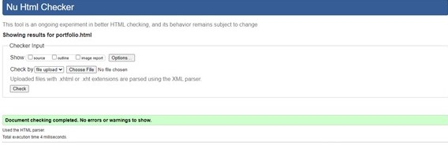
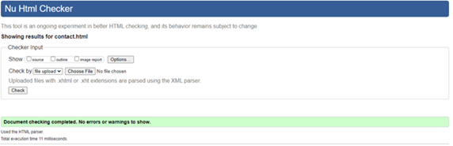

Rich's Portfolio
UNI LIFE
UNI LIFE
Before university, I would say my experience on web development was not well developed. Which means I had to learn more to develop my skills on programming website. To start off with experience, I had a little bit idea of creating website, so I did not really struggle like how I thought I would be. In college, I was able to create a website on my own, which gave me a head start on how to create a website. Comparing computing skills in college to university is different from my point of view. It was like learning whole different skills, which was hard at the start. First week of learning web development in university was hard, because I did not really know what was going on. But I started to catch up when i attended more lesson and doing up own research. For example, I was not familiar with (Atom) software used for this module to create website. Attending lessons and research i realised some of the codes and software I used before was different. Some of them was old which means I was not allowed to use them to create my website. I had to get used to learning the new code and software to create my website. Which was not had because I had to get used to it. I had a lot of ups and downs when I was creating the website because everything was new to me, so I had to work hard and do own research, practice to get used to it. Checking the assignment criteria, for my website I had to create five pages with different information’s. For my homepage, what I done was to link all the pages, so that it will be easier for user whenever they would want to visit any page. The reason why I choose this design was because this is the best layout that i could come out with when I was my CSS. It was so simple to create because i learned about it and i was confident that it will come out right. I kept everything consistence on every page for example, all the pages have the same text size and colours except from the headings which has different colours on some pages.
Index validation
Portfolio validation

Sitereport validation
contact validation

CV validation